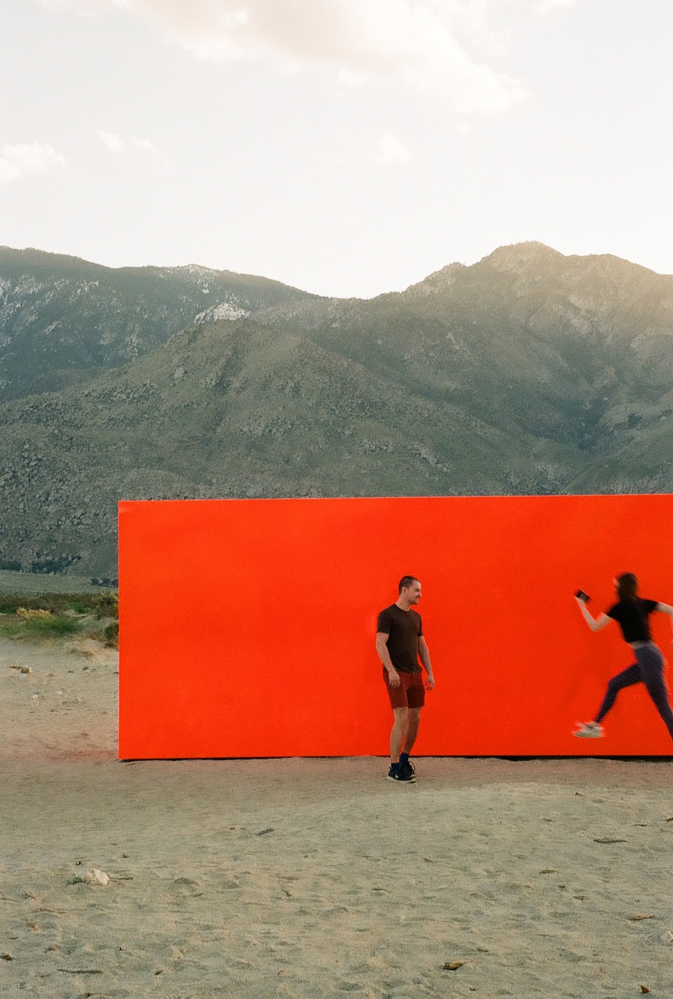

A bunch of film photos
I received my first big girl film camera – a Canon A-1 – given to me by my Tita Tina on my sixteenth birthday. A passion for film grew from there, and since then, I haven't been able to stop myself from packing a Ziploc of film and a camera on every trip I take.



Photos taken on Canon A-1, Pentax PC35AF and Contax G2 bodies on Kodak Colorplus 200, Kodak Portra 400, Kodak Ektar 100, Fujifilm Superia 400, and Kodak Ultramax 400. Photos taken in California, New York, Boston, Hong Kong, Chicago, and the Philippines.